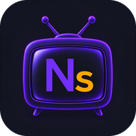

Last updated: October 28, 2026
This policy explains which data the NaviStream Android app uses, why, and what your rights are.
To work, the app stores in its private storage, on your device only:
This data is never sent to us. It is deleted if you clear the app's data or uninstall it.
NaviStream connects directly to the servers you configured, using the credentials you entered, to load channels, programs and videos. These exchanges take place between your device and your provider and are subject to that provider's privacy policy. NaviStream does not provide any content.
The free version shows ads provided by Google AdMob. To show, measure and, with your consent, personalize these ads, Google may process data such as your device's advertising ID, your IP address, device and app information, and your interactions with ads.
Learn more: how Google uses data from partner apps and Google's privacy policy.
When you cast, the app sends the address of the video (which may contain your provider credentials) to the Cast device you chose on your local network (Chromecast, Google TV, Android TV…), which then plays it directly from your provider. This address is not sent to us. Google Cast is provided by Google Play services and is subject to Google's privacy policy.
Purchases (subscription, lifetime purchase, donations) are processed by Google Play. We never receive your payment information (card, bank details, address).
To check whether you have the ad-free version and to restore your purchases on your other devices, the app uses RevenueCat, Inc. (United States), which acts on our behalf. RevenueCat receives:
This data is used only to manage your purchases (legal basis: performance of the contract), and is kept as long as needed for that purpose and for our accounting obligations. It may be processed outside the European Union, with appropriate safeguards (European Commission standard contractual clauses). Learn more: RevenueCat privacy policy.
Alex Poncy, under the Navi Labs brand
Contact: navilabs.dev@gmail.com
NaviStream is not intended for children and does not knowingly collect data about them.
Under the GDPR, you have the right to access, rectify, erase, object to and restrict the processing of your data. Since most of your data stays on your device, you can delete it yourself at any time. For purchase data held by RevenueCat, or for any question, write to navilabs.dev@gmail.com. You may also lodge a complaint with your data protection authority (in France: the CNIL, www.cnil.fr).
This policy may change, in particular with new features. The update date is shown at the top of this page.
Dernière mise à jour : 28 octobre 2026
Cette politique explique quelles données l'application Android NaviStream utilise, pourquoi, et quels sont vos droits.
Pour fonctionner, l'application enregistre dans son espace privé, sur votre appareil uniquement :
Ces données ne nous sont jamais transmises. Elles sont supprimées si vous effacez les données de l'application ou si vous la désinstallez.
NaviStream se connecte directement aux serveurs que vous avez configurés, avec les identifiants que vous avez saisis, pour charger les chaînes, les programmes et les vidéos. Ces échanges ont lieu entre votre appareil et votre fournisseur ; ils sont soumis à la politique de confidentialité de ce fournisseur. NaviStream ne fournit aucun contenu.
La version gratuite affiche des publicités fournies par Google AdMob. Pour afficher, mesurer et, avec votre accord, personnaliser ces publicités, Google peut traiter des données telles que l'identifiant publicitaire de votre appareil, votre adresse IP, des informations sur l'appareil et l'application, et vos interactions avec les publicités.
Pour en savoir plus : utilisation des données par Google sur les applications partenaires et règles de confidentialité de Google.
Quand vous diffusez sur une TV, l'application envoie l'adresse de la vidéo (qui peut contenir les identifiants de votre fournisseur) à l'appareil Cast choisi sur votre réseau local (Chromecast, Google TV, Android TV…), qui la lit ensuite directement chez votre fournisseur. Cette adresse ne nous est pas transmise. Google Cast est fourni par les services Google Play et soumis aux règles de confidentialité de Google.
Les achats (abonnement, achat à vie, dons) sont traités par Google Play. Nous ne recevons jamais vos informations de paiement (carte, coordonnées bancaires, adresse).
Pour savoir si vous avez la version sans publicité et pour restaurer vos achats sur vos autres appareils, l'application utilise RevenueCat, Inc. (États-Unis), qui agit pour notre compte. RevenueCat reçoit :
Ces données servent uniquement à gérer vos achats (base légale : exécution du contrat) et sont conservées le temps nécessaire à cette fin et à nos obligations comptables. Elles peuvent être traitées hors de l'Union européenne, avec des garanties appropriées (clauses contractuelles types de la Commission européenne). Pour en savoir plus : politique de confidentialité de RevenueCat.
Alex Poncy, sous la marque Navi Labs
Contact : navilabs.dev@gmail.com
NaviStream n'est pas destinée aux enfants et ne collecte pas sciemment de données les concernant.
Conformément au RGPD, vous disposez d'un droit d'accès, de rectification, d'effacement, d'opposition et de limitation. Comme la plupart de vos données restent sur votre appareil, vous pouvez les supprimer vous-même à tout moment. Pour les données d'achat conservées par RevenueCat, ou pour toute question, écrivez-nous à navilabs.dev@gmail.com. Vous pouvez aussi adresser une réclamation à la CNIL (www.cnil.fr).
Cette politique peut évoluer, notamment avec de nouvelles fonctionnalités. La date de mise à jour figure en haut de cette page.
Última actualización: 28 de octubre de 2026
Esta política explica qué datos utiliza la aplicación Android NaviStream, para qué y cuáles son tus derechos.
Para funcionar, la aplicación guarda en su espacio privado, solo en tu dispositivo:
Estos datos nunca se nos envían. Se eliminan si borras los datos de la aplicación o si la desinstalas.
NaviStream se conecta directamente a los servidores que has configurado, con las credenciales que has introducido, para cargar canales, programas y vídeos. Estos intercambios se realizan entre tu dispositivo y tu proveedor, y se rigen por la política de privacidad de ese proveedor. NaviStream no ofrece ningún contenido.
La versión gratuita muestra anuncios de Google AdMob. Para mostrar, medir y, con tu consentimiento, personalizar estos anuncios, Google puede tratar datos como el identificador de publicidad de tu dispositivo, tu dirección IP, información del dispositivo y de la aplicación, y tus interacciones con los anuncios.
Más información: cómo usa Google los datos de las aplicaciones asociadas y política de privacidad de Google.
Cuando haces cast, la aplicación envía la dirección del vídeo (que puede contener las credenciales de tu proveedor) al dispositivo Cast que elijas en tu red local (Chromecast, Google TV, Android TV…), que la reproduce directamente desde tu proveedor. Esta dirección no se nos envía. Google Cast lo proporcionan los servicios de Google Play y se rige por la política de privacidad de Google.
Las compras (suscripción, compra de por vida, donaciones) las gestiona Google Play. Nunca recibimos tus datos de pago (tarjeta, datos bancarios, dirección).
Para saber si tienes la versión sin anuncios y para restaurar tus compras en tus otros dispositivos, la aplicación utiliza RevenueCat, Inc. (Estados Unidos), que actúa en nuestro nombre. RevenueCat recibe:
Estos datos se usan solo para gestionar tus compras (base legal: ejecución del contrato) y se conservan el tiempo necesario para ello y para nuestras obligaciones contables. Pueden tratarse fuera de la Unión Europea, con las garantías adecuadas (cláusulas contractuales tipo de la Comisión Europea). Más información: política de privacidad de RevenueCat.
Alex Poncy, bajo la marca Navi Labs
Contacto: navilabs.dev@gmail.com
NaviStream no está dirigida a menores y no recoge conscientemente datos sobre ellos.
De acuerdo con el RGPD, tienes derecho de acceso, rectificación, supresión, oposición y limitación. Como la mayoría de tus datos se quedan en tu dispositivo, puedes borrarlos tú mismo en cualquier momento. Para los datos de compra que conserva RevenueCat, o para cualquier pregunta, escríbenos a navilabs.dev@gmail.com. También puedes presentar una reclamación ante tu autoridad de protección de datos (en Francia: la CNIL, www.cnil.fr).
Esta política puede cambiar, sobre todo con nuevas funciones. La fecha de actualización aparece al principio de esta página.